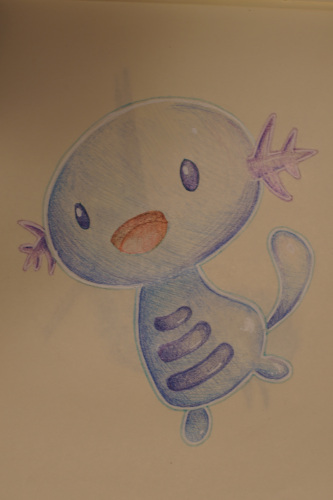
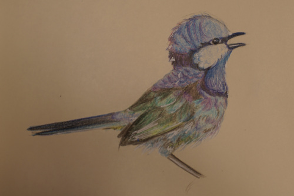
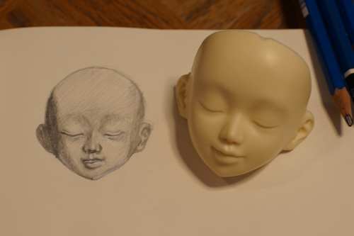

people keep talking about watching "squid game" and i keep wondering how they're just watching splatoon. it seems to be a korean show though...
anyway i drew a wooper. and tried to do a photostudy of a splendid fairywren that is in my calendar. he's very splendid indeed!!!
i was going to practice faceups today and the i woke up to see snow falling. i hope i dont have to wait a few months if the weather only gets colder. i was thinking about wiping my lusis faceplate along with sist last night but now im glad i didnt!!
i did boil the faceplates that weren't fitting on the headbacks to get them on. it worked pretty well! oyasumi is still very tight and needed a whole minute instead of just 30 seconds.


i think oyasumi is criminally underrated btw. she has such a gentle smile. i was so bummed when i got her and she didnt fit on the headback. a few friends suggested she might be a recast but that's silly to think since she matches a body from well before recasts perfectly. i know those guys werent out there slaving away to perfectly color match a 10 year old body. im also not even sure oyasumi has been recasted. she's pretty unpopular and not in any lusis or sist recast sets. h*ck i dont even see her on the alchemic labo eshop!!
i tried to sketch her too. im not great at all at this but practice makes perfect. my white gel pens were too thick and betrayed me. i gotta start bigger next time.
im getting super close to the 180 day paypal protection limit for hina and it's freaking me out a little. i have very few doubts volks will disappear but what my mom said months ago about me eventually getting screwed over is stuck in my head. I never want to do a long preorder again regardless of many companies having great reputations. hopefully in a few days when I am fully at mother SD's mercy i'll calm down.
i changed a lot of my doll opinions page on chinese dolls. it's more of a complex subject than i made it out to be. here's a thread that brings a little more light to the subject. there really are some beautiful chinese dolls out there, but so many of them are sculpted without soul. if you look at MSD body comparison photos you can really see it. I am 100% not talking about stylization either. angel fantasy has some slenderman tier arms for example. I've seen some hand comparisions where the hands are almost noodle tubes attached to a rectangle. they just feel so cheaply made. i also dislike relatively large wrist joints with thin hands and a ton of chinese companies do that.
i also saw in oueneifs factory photos that there are people with cheap blue surgeons masks sanding resin which just kills me. i know that company doesnt care about anything but money but do they really expose their workers to that unsafe of conditions? i suppose they can just find a new sander when the one they have develops lung cancer. i'm actually super disgusted by this im sorry.
theres also pictures of their faceup artists in regular masks too. its possible (but unlikely) theres a fume hood out of the picture, so i wont freak out about that one yet.